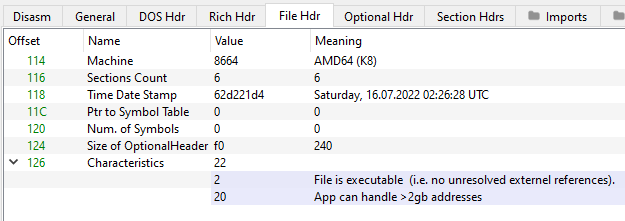
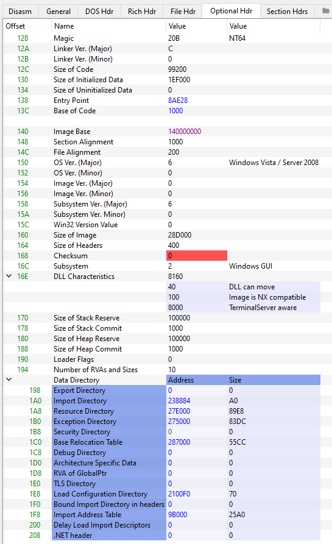

Introduction
The NT headers follow after the DOS Stub or the Rich Header, if such is present. They are defined in a struct which has two versions - a 32-bit version for PE32 and a 64-bit one for PE32+ files. The main difference between the versions is the Optional Header which also has two versions. The structs are all defined in <winnt.h>:
typedef struct _IMAGE_NT_HEADERS64 {
DWORD Signature;
IMAGE_FILE_HEADER FileHeader;
IMAGE_OPTIONAL_HEADER64 OptionalHeader;
} IMAGE_NT_HEADERS64, *PIMAGE_NT_HEADERS64;
typedef struct _IMAGE_NT_HEADERS {
DWORD Signature;
IMAGE_FILE_HEADER FileHeader;
IMAGE_OPTIONAL_HEADER32 OptionalHeader;
} IMAGE_NT_HEADERS32, *PIMAGE_NT_HEADERS32;
Both header versions begin with a signature represented by a DWORD. These 4 bytes identify the file as a PE and are always set to 0x50450000, or PE\0\0 in ASCII. You can view this field in PE-Bear:

COFF File Header
Next is the COFF File Header, or the IMAGE_FILE_HEADER, which is again identical in both the 32-bit and 64-bit versions and is defined as follows:
typedef struct _IMAGE_FILE_HEADER {
WORD Machine;
WORD NumberOfSections;
DWORD TimeDateStamp;
DWORD PointerToSymbolTable;
DWORD NumberOfSymbols;
WORD SizeOfOptionalHeader;
WORD Characteristics;
} IMAGE_FILE_HEADER, *PIMAGE_FILE_HEADER;
Machineindicates the type of architecture that the PE file is designed to run on. For example, this field will contain0x8864for amd64 and0x14cfor i386. For a full list of values you should refer to Microsoft's documentation.NumberOfSectionscontains the number of entries in the section table.TimeDateStamp- this field is a Unix timestamp which indicates when the file was created.PointerToSymbolTableandNumberOfSymbols- these fields contain an offset to the COFF symbol table as well as the number of entries inside. Since this table is deprecated, these fields are set to 0.SizeOfOptionalHeader- this field is rather self-explanatory.Characteristics- this is a field for flags that indicate a multitude of things. The meaning of each flag can again be explored on the site of Microsoft's documentation.
You can get a view of the COFF File Header using PE-Bear:

Optional Header
The Optional Header is crucial to the PE loader and linker on Windows systems. It is called optional because certain files, such as object files, lack such a header. It does not really have a fixed size, hence why the IMAGE_FILE_HEADER.SizeOfOptionalHeader field exists. Furthermore, the Optional Header also comes in two flavours - 32- and 64-bit. These differ in only two aspects - the 32-bit version contains 31 entries, while the 64-bit version has 30, and data types of certain members are different. Namely, the 32-bit version contains a BaseOfData member, which is an RVA to the beginning of the data section, and the fields ImageBase, SizeOfStackReserve, SizeOfStackCommit, SizeOfHeapReserve, SizeOfHeapCommit change from DWORD to ULONGLONG between 32- and 64-bit, respectively. Both structs are defined in <winnt.h>:
typedef struct _IMAGE_OPTIONAL_HEADER {
// Standard fields.
WORD Magic;
BYTE MajorLinkerVersion;
BYTE MinorLinkerVersion;
DWORD SizeOfCode;
DWORD SizeOfInitializedData;
DWORD SizeOfUninitializedData;
DWORD AddressOfEntryPoint;
DWORD BaseOfCode;
DWORD BaseOfData;
// NT additional fields.
DWORD ImageBase;
DWORD SectionAlignment;
DWORD FileAlignment;
WORD MajorOperatingSystemVersion;
WORD MinorOperatingSystemVersion;
WORD MajorImageVersion;
WORD MinorImageVersion;
WORD MajorSubsystemVersion;
WORD MinorSubsystemVersion;
DWORD Win32VersionValue;
DWORD SizeOfImage;
DWORD SizeOfHeaders;
DWORD CheckSum;
WORD Subsystem;
WORD DllCharacteristics;
DWORD SizeOfStackReserve;
DWORD SizeOfStackCommit;
DWORD SizeOfHeapReserve;
DWORD SizeOfHeapCommit;
DWORD LoaderFlags;
DWORD NumberOfRvaAndSizes;
IMAGE_DATA_DIRECTORY DataDirectory[IMAGE_NUMBEROF_DIRECTORY_ENTRIES];
} IMAGE_OPTIONAL_HEADER32, *PIMAGE_OPTIONAL_HEADER32;
typedef struct _IMAGE_OPTIONAL_HEADER64 {
// Standard fields
WORD Magic;
BYTE MajorLinkerVersion;
BYTE MinorLinkerVersion;
DWORD SizeOfCode;
DWORD SizeOfInitializedData;
DWORD SizeOfUninitializedData;
DWORD AddressOfEntryPoint;
DWORD BaseOfCode;
// NT additional fields
ULONGLONG ImageBase;
DWORD SectionAlignment;
DWORD FileAlignment;
WORD MajorOperatingSystemVersion;
WORD MinorOperatingSystemVersion;
WORD MajorImageVersion;
WORD MinorImageVersion;
WORD MajorSubsystemVersion;
WORD MinorSubsystemVersion;
DWORD Win32VersionValue;
DWORD SizeOfImage;
DWORD SizeOfHeaders;
DWORD CheckSum;
WORD Subsystem;
WORD DllCharacteristics;
ULONGLONG SizeOfStackReserve;
ULONGLONG SizeOfStackCommit;
ULONGLONG SizeOfHeapReserve;
ULONGLONG SizeOfHeapCommit;
DWORD LoaderFlags;
DWORD NumberOfRvaAndSizes;
IMAGE_DATA_DIRECTORY DataDirectory[IMAGE_NUMBEROF_DIRECTORY_ENTRIES];
} IMAGE_OPTIONAL_HEADER64, *PIMAGE_OPTIONAL_HEADER64;
A concept which PE files heavily rely on are RVAs or Relative Virtual Addresses. An RVA represents an offset from the beginning of the Image Base, which is the location where the PE file was loaded into memory. In order to turn an RVA into an absolute address, you need to add the RVA to the image base.
The Optional Header begins with a few standard members which are remnants of the COFF file format. The rest of the fields are Microsoft's PE extension.
Magic is a field which describes the state of the file. This member is what determines whether the image is 32-bit or 64-bit - IMAGE_FILE_HEADER.Machine is ignored by the Windows PE loader. Three common values for this field are listed by Microsoft:
| Value | Meaning |
|---|---|
0x10b | The file is a PE32 image. |
0x20b | The file is a PE32+ image. |
0x107 | The file is a ROM image. |
MajorLinkerVersion and MinorLinkerVersion contain the major and minor versions of the linker used to build the PE file.
SizeOfCode holds the size of the code (.text) section, or the sum of the sizes of all code sections, if more than one is present.
SizeOfInitializedData contains the size of the initialized data (.data) section, or the sum of the sizes of all initialised data sections, if more than one is present.
SizeOfUninitializedData contains the size of the uninitialized data (.bss) section, or the sum of the sizes of all uninitialised data sections, if more than one is present.
AddressOfEntryPoint stores an RVA of the file's entry point when loaded into memory. For program images this field points to the starting address and for device drivers it points to an initialisation function. An entry point is optional for DLLs. If an entry point is missing, this field is set to 0.
BaseOfCode is an RVA to the start of the code section when the image is loaded into memory.
BaseOfData (PE32 only) is only present in 32-bit executables and points to the start of the data section when the image is loaded into memory.
ImageBase is a field which holds the preferred load address for the file in memory and must a multiple of 64 000. This field is pretty much always ignored due to a multitude of reasons such as ASLR.
SectionAlignment holds the value to which sections are aligned in memory. All sections must be aligned to a multiple of this value. This field defaults to the architecture's page size and cannot be less than FileAlignment.
FileAlignment represents the section alignment on disk rather than in memory. If the size of the section data is less than this value, it gets padded with zeros. Only integral powers of 2 are allowed for this value and it should range between 512 and 64 000.
MajorOperatingSystemVersion, MinorOperatingSystemVersion, MajorImageVersion, MinorImageVersion, MajorSubsystemVersion and MinorSubsystemVersion specify the major and minor versions for the required operating system, the major and minor versions of the image file, and the major and minor versions of the subsystem to be used.
Win32VersionValue is a reserved field which should be set to 0.
SizeOfImage represents the number of bytes that the file occupies but is rounded to a multiple of SectionAlignment.
SizeOfHeaders describes the combined size (in bytes) of the DOS Stub, NT Headers, and section headers, rounded to a multiple of FileAlignment.
CheckSum is a checksum of the file which is used to validate the PE at load time.
Subsystem specifies the Windows subsystem required to run the image.
DLLCharacteristics is a flag field and a terrible misnomer, since it is present in all PE files.
SizeOfStackReserve, SizeOfStackCommit, SizeOfHeapReserve and SizeOfHeapCommit describe the amount to reserve and commit for the stack and the heap, respectively.
LoaderFlags is a reserved field which should be set to 0.
NumberOfRvaAndSizes contains the size of the Data Directories array.
DataDirectory is an array of IMAGE_DATA_DIRECTORY structures and is what makes the Optional Header of variable size.
The Optional Header can be inspected by means of PE-Bear:
